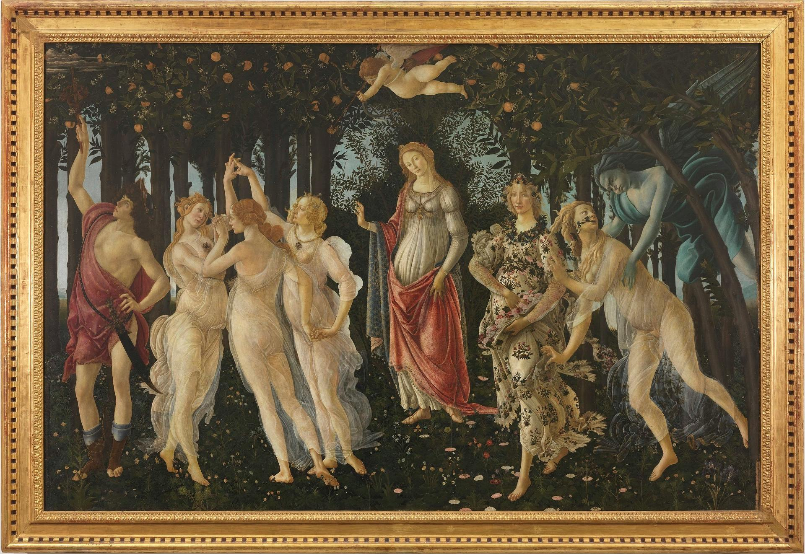

തലയ്ക്കുമാത്രമല്ല, അരയ്ക്കും പ്രേമം ചുറ്റിപിടിച്ചിരിക്കുന്ന ഒരു വസന്തകാലം. അക്ഷരാപ്തഗണങ്ങൾക്ക് ഒത്തുകൂടാൻ തലസ്ഥാനത്തിന്റെ പുതിയ നഗരഭാഗത്ത് ഒരുക്കിയിട്ടുള്ള ഒരു ആഹാരപഞ്ജരം: 'ചാ പബ്ബ്!' അപ്പോസ്ട്രോഫി ഉപയോഗിക്കാനറിയാത്ത യുവതലമുറയിൽപോലും തുരഗവേഗത്തിൽ തരംഗമായിക്കൊണ്ടിരിക്കുന്ന ഒരു കിടിലൻ വിഭവം ഇവിടെ കിട്ടും. 'സൂപ്പും കൊണ്ടാട്ടവും!' മലബാറിൽ നിന്നും ബിരിയാണിയുണ്ടാക്കാൻ തലസ്ഥാനത്തെത്തിയ ഒരു ഭക്ഷണവൈദ്യൻ നാട്ടിൽ നിന്നും കൊണ്ടുവന്ന അരിക്കൊണ്ടാട്ടം ക്രൂട്ടോണിന് പകരം ടൊമാറ്റോ സൂപ്പിലിട്ടു കഴിച്ചു. വെറുതെ ഒരു രസം. പക്ഷേ പാത്രം കഴുകാൻ നിയമിച്ചിരുന്ന പരശുരാമൻ ബിടെക്, എംബിഎ, ഇതിന് ദൃക്സാക്ഷിയായി. തത്സമയം കാലം സ്തംഭിക്കുന്നതായും അണ്ഡകടാഹത്തിന്റെ പാത്രമാവുന്നതുമായിട്ടുള്ള അനുഭുതിയുണ്ടായിട്ടില്ലേ? ഏറെക്കുറെ ആർക്കിമെഡീസിന്റെ യുറേക്ക നിമിഷം. നഗ്നത മറക്കുന്ന, പരമാർത്ഥത്തെ താരാട്ടുന്ന ഉൽകൃഷ്ടമായ ക്ഷണം. ഓൺട്രുപ്രെനെർ എന്ന പരന്ത്രീസ് വാക്കിന്റെ ട്രൂ അർത്ഥം ആ നിമിഷത്തിൽ പരശുരാമനെ കവർന്നു. കഴുകുന്ന പാത്രം എറിഞ്ഞ് രാമനും പാത്രമായി. അവിടുന്ന് വീണ്ടുമൊരുചരിത്രം ആരംഭിച്ചു.
ചാ പബ്ബിൽ ദഹിപ്പിക്കാൻ ഒരു കോപ്പ സൂപ്പും കൊണ്ടാട്ടവും പറഞ്ഞ് പയ്യൻ നാലു കസേരകളുള്ള ഒരു മേശയിൽ രണ്ട് പേർക്കുവേണ്ടി കാത്തിരിക്കുകയാണ്. ഒന്ന്: കാമുകി. രണ്ട്: വഴികാട്ടി. അതികായനായ ഒരു ബന്ധുവിനെ തന്നെ വഴികാട്ടി, തത്ത്വജ്ഞാനി, സുഹൃത്ത് എന്ന ക്രമത്തിൽ പണ്ടേ കിട്ടിയിരുന്നു. ഈയിടയ്ക്ക് കളഞ്ഞുകിട്ടിയ സ്വന്തം കാമുകി, സുകൃതിനിയെ വഴികാട്ടിക്ക് പരിചയപ്പെടുത്തുന്നതാണ് ഇന്നത്തെ ദൗത്യം. ആദ്യം വന്നത് പക്ഷേ സൂട്ടിടാത്ത ബെയറിയാണ്, ജീൻസിട്ട സുന്ദരി, പ്രോപ്പർ നതഭ്രൂ. അരയിൽ പേനയും പുസ്തകവും തിരുകിയിരിക്കുന്നു. സുന്ദരിയോടാണ് സൂപ്പും കൊണ്ടാട്ടവും ആവശ്യപ്പെട്ടിരുന്നത്. അവൾ മേശയിൽ വച്ചതോ, ഒരു കിടിലൻ പാസ്ത.
"ലേകിൻ", പയ്യൻ ജീൻസിട്ട സുന്ദരിയുടെ മുഖത്തേക്ക് നോക്കി
സുന്ദരി: "ഹാൻ ജി"
പയ്യൻ: "ഹം രാഗാലു നീർ ഓർ കൊണ്ടാട്ടം ഓർഡർ കിയ ഥ"
(ഞാൻ തക്കാളി സൂപ്പും, അരികൊണ്ടാട്ടവുമാണ് പറഞ്ഞിരുന്നത്)
സുന്ദരി:"ഹാ..?"
(ങ്ഹേ..?)
"ഹാ."
(ഓ.)
"ആപ് വോ ബോല ഥ, മേ എ ലേ ആയ. ഖാ ലീജിയെ ന?"
(പയ്യൻ, നിങ്ങളതാണ് പറഞ്ഞത്, ഞാൻ ഇതാണ് കൊണ്ടുവന്നത്. ഇത് തന്നെ കഴിച്ചുകൂടെ?)
യുക്തിവാദം കൊണ്ട് ഫാസിസത്തെ തോൽപ്പിക്കാനാവില്ലെന്ന് എവിടെയോ വായിച്ചതോർമ്മവരുന്നു. യുക്തിയല്ല കുട്ടിയുടെ ശക്തി എന്നും, ഗാലിലെയോവിനേയും ലോക്കിനെയും ഡേയ്കാർട്ടിനെയും ഒരു തട്ടിലിരുത്തിയാലും സുന്ദരിയിരിക്കുന്ന മറു തട്ട് താണ് തന്നെയിരിക്കുമെന്നും പയ്യന് മനസ്സിലായി. പ്രളയം വരുമ്പോൾ കന്യക പോപ്പി കുടയന്വേഷിക്കുമെന്ന് തീർച്ചപ്പെടുത്തി.
പയ്യൻ കൈകൂപ്പി. സുന്ദരി നടന്ന് മറഞ്ഞു.
പാസ്തയെ ദഹിപ്പിക്കാൻ തുടങ്ങി
[എന്റർ സ്വന്തം കാമുകി]
ചെവിക്ക് പിന്നിൽ ഷനേൽ അഞ്ചാമൻ തന്നെയാണെന്ന് മണത്തുറപ്പുവരുത്തിയതിന് ശേഷം അവൾ വട്ടമേശക്കിരുന്നു. വലുതുഭാഗത്തെ മുടി ചെവിക്ക് പിന്നിൽ ഒതുക്കുന്നു. ഇടതു ഭാഗത്തെ മുന്നിലേക്കിടുന്നു, രണ്ട് പ്രാവശ്യം ഉഴിയുന്നു.
സുകൃതിനി: "എവിടെ?"
പയ്യൻ: "വരുന്നേയുള്ളൂ"
സൂട്ടിടാത്ത ബെയറി, ജീൻസിട്ട സുന്ദരി വീണ്ടും വന്നു.
ജീൻസിട്ട സുന്ദരി: "എന്ത് വേണം?"
പയ്യൻ മുഖമുയർത്താതെ പാസ്തയിലേക്ക് തന്നെ നോക്കിയിരുന്നു.
കാമുകി: "നീ പാസ്തയാണല്ലേ പറഞ്ഞത്, എന്നാൽ ഞാൻ സൂപ്പും കൊണ്ടാട്ടവും പറയാം"
പയ്യൻ മുഖമുയർത്തി.
ഭാനുമതി ജീൻസിട്ട സുന്ദരിയോട്: "ഒരു സൂപ്പും കൊണ്ടാട്ടവും"
ഒരു നിമിഷത്തേക്കെങ്കിലും, അതായത് ഒന്ന് കണ്ണടച്ച് തുറക്കാനുള്ള സമയത്തേക്ക് പയ്യന്റെ മുഖത്തേക്ക് മനോഹരി
നോക്കിയിരുന്നെങ്കിൽ എന്ന് വ്യഥാ ആഗ്രഹിച്ചു. 'അരുതേ' എന്ന സന്ദേശഭാവങ്ങൾ അത്രവേഗം
വദനത്തിലേർപ്പെടുത്തിയതെങ്ങനെയെന്നാശ്ചര്യം പിന്നിൽ.
ഇനിയെന്ത്? വെൽ, കണ്ടറിയാത്തവൾ കൊണ്ടറിയട്ടെ.
[എന്റർ വഴികാട്ടി]
ഒരു കവിസഞ്ചിയും വ്യത്യസ്തമായ വാറുള്ള ചെരിപ്പുമിട്ട് വഴികാട്ടി വന്നു. ദ്രുതഗതിയിലുള്ള ആലിംഗനങ്ങൾ.
വഴികാട്ടി: "വീണ്ടും കാണാൻ കഴിഞ്ഞതിൽ സന്തോഷം."
സുകൃതിനി: "അതിന് നമ്മളിതിനു മുൻപ്…"
(അർദ്ധ പ്രസ്താവനയിൽ അവൾ പയ്യന്റെ മുഖത്തേക്ക് നോക്കി.)
വഴികാട്ടി: "ക്ഷമിക്കണം, പയ്യനോടാണ് പറഞ്ഞത്"
പയ്യൻ പൊട്ടിച്ചിരിച്ചു: "ഹ ഹ ഫലിതം. ഞാൻ പറഞ്ഞിട്ടില്ലേ വഴികാട്ടി ഫലിതപ്രിയനാണ്"
വഴികാട്ടി: "നവയൗവനയുക്തയെ സ്ത്രീമിത്രമാക്കുന്ന തിരക്കായിരുന്നിരിക്കണം, ഐ പ്രെസ്യും"
അല്പോക്തി അവലംബിച്ചുകൊണ്ട് പയ്യൻ മുഖം കുനിച്ച് "ങ്ഹും" എന്ന് മൂളി. കുനിഞ്ഞപ്പോൾ കുറച്ച് ലജ്ജ താഴെ പോയി. ആരും കാണാതെ സുകൃതിനി കുനിഞ്ഞതെടുത്ത് കണ്ണെഴുതി പൊട്ടുകുത്തി.
വഴികാട്ടി: "സ്ത്രീമിത്രമായെന്ന് അവൾ ഗോഡ് പ്രോമിസ് ചെയ്തോ"
പയ്യൻ: "ഇല്ല, ഭാരതരീതിയിൽ മദർ പ്രോമിസാണ് ചെയ്തത്. കരാറിലും ഒപ്പിട്ടു. ശേഷമാണ് ഇ-കമ്പി അയച്ചത്"
വഴികാട്ടി: "കുട്ടി കുറ്റം സമ്മതിക്കുന്നുവോ?"
നളിനകാന്തി: "എന്റെ കൊക്കിന് ജീവനുള്ളടുത്തോളം കാലം യുവർ ഓണർ."
വഴികാട്ടി: "പഞ്ച പക്ഷി ശാസ്ത്രം വശമുണ്ടോ?"
നളിനകാന്തി: "ക്ഷമിക്കണം, കോക്ക് അല്ല, കൊക്കെന്നാണ് ഉരിയാടിയത്."
വഴികാട്ടി: "പയ്യൻ, കണ്ണിൽ തന്നെ ബാണമയച്ചിരിക്കുന്നു യുവതി. ഇനി ഞാൻ തന്നെ ബെസ്റ്റ്മാൻ. പറയൂ, എപ്പോഴാണ് കല്യാണം "
പയ്യൻ: "വഴികാട്ടിക്ക് നന്ദി. കിഴവി ഇച്ഛിച്ചതും ഡോക്ടർ കല്പിച്ചതും പാരസെറ്റമോൾ. അങ്ങ് തന്നെ കുടുംബക്കാരെ ബോധിപ്പിക്കണം"
വഴികാട്ടി: "നാരദവൃത്തി അല്ലേ? ഇന്ന് രാവിലെ വി.കെ.എൻ-നെ വീണ്ടും വായിച്ച് കുറേ ചിരിച്ചിരുന്നു."
സംഭാഷണം രസകരമായേക്കുമെന്നായപ്പോൾ ലോകത്തെ എല്ലാ ബെയറിമാരെയും പോലെ ജീൻസിട്ട സുന്ദരി കാലാവസ്ഥയിലേക്ക് വലിഞ്ഞുകയറി. രണ്ടാം ചിന്തയിൽ കരി മേഘങ്ങളെപ്പോലെ എഴുന്നള്ളി എന്ന് പറയുന്നതിലും തെറ്റില്ല.
ജീൻസിട്ട സുന്ദരി: "ആപ്കാ കാപച്ചിനോ"
(താങ്കളുടെ ചികഞ്ഞ പാൽകാപ്പി)
നളിനകാന്തി: "കിസ്കാ?"
(ആരുടെ?)
ബെയറി:(പയ്യനെ നോക്കി ചിരിച്ചു കൊണ്ട്) "മേടം, ആപ്കാ"
നളിനകാന്തി: "ഞാൻ സൂപ്പും കൊണ്ടാട്ടവുമാണ് പറഞ്ഞിരുന്നത്"
ജീൻസിട്ട സുന്ദരി: "വോ ആ രഹാ ഹേ"
(അതും വരുന്നുണ്ട്)
നളിനകാന്തി: "അപ്പോൾ ഈ കാപ്പി?"
ജീൻസിട്ട സുന്ദരി: (തലയാട്ടി കൊണ്ട്) "ടീക് ഹേ, ഏക് സാഥ് ലെ ആവുങ്ക"
(ശരി, ശരി, ഇതും അതിന്റെ കൂടെ കൊണ്ടുവരാം)
നളിനകാന്തി തെലതിശയത്തോടെ ബെയറിയെ നോക്കി വായും പൊളിച്ചിരുന്നു. ജന്മനാ വീറും വാശിയുമുള്ള പെൺ കുലത്തിൽ ജനിച്ച നളിനകാന്തിയെ ജീൻസിട്ട സുന്ദരി ക്ഷിപ്രം ഞെട്ടിച്ചിരിക്കുന്നു.
ബെയറി ദൗത്യം തുടർന്നു.
സുന്ദരി: (വഴികാട്ടിയോട്): "ആപ് കേലിയെ?"
(താങ്കൾക്കെന്തുവേണം?)
വഴികാട്ടി: "ഒരു കാർബണാറാ പാസ്ത, പിന്നെ ഒരു ഫ്ലാറ്റ് വൈറ്റ് കോഫി" (വ്യതയസ്തമായൊരു പാസ്ത, പിന്നെ കടുപ്പത്തിലൊരു കാപ്പി)
തിരിഞ്ഞു നോക്കുക പോലും ചെയ്യാതെ സുന്ദരി തിരിഞ്ഞു നടന്നകന്നു.
വരാനുള്ളതൊന്നും വഴിയിൽ തങ്ങില്ലലോ എന്ന് പയ്യൻ സ്വഗതിച്ചു.
പയ്യൻ: "ഓ, ബൈ ദ വേ, വഴികാട്ടി, ഇത് മിസ്സ് കാമുകി. സുകൃതിനി, നളിനകാന്തി, ലവംഗി, എന്നൊക്കെ
വിളിക്കും"
"ഇത് ഡോ. വഴികാട്ടി."
ലവംഗി: "പരിചയപ്പെടാൻ കഴിഞ്ഞതിൽ ആനന്ദിക്കുന്നു."
വഴികാട്ടി: "സമചിത്തം.
എവിടെവെച്ചാണ് ദുരന്തമുണ്ടായതെന്നോർക്കുന്നുണ്ടോ?"
ലവംഗി: "ഉവ്വ്. ഇറ്റലിയിൽ വച്ചാണ് പയ്യനെ കണ്ടുമുട്ടിയത്."
വഴികാട്ടി: "ഫ്ലോറെൻസ് ആയിരിക്കും."
ലവംഗി: "ഹഫിൾപഫിന് പത്ത് കുത്തുകൾ. എങ്ങിനെ മനസ്സിലായി?"
വഴികാട്ടി: ഐ അഡോർ ഇ. എം. ഫോർസ്റ്റെർസ് 'എ റൂം വിത്ത് എ വ്യൂ'
(ഇ. എം. ഫോർസ്റ്റെറിന്റെ 'ജനാല തുറന്നാൽ സൗന്ദര്യാനുഭൂതിയുളവാകുന്ന കാഴ്ച്ച സമ്മാനിക്കുന്ന ഒരു മുറി'
എനിക്ക് ഏറെ പ്രിയങ്കരമായ ഒരു കൃതിയാണ്)
"പയ്യന് പുസ്തകം സമ്മാനിച്ചതും ഞാൻ തന്നെ. അത് വായിച്ചതിനു ശേഷമാണ് പയ്യൻ പറന്നത്"
ലവംഗി: "ഉവ്വോ? അറിഞ്ഞത്തിൽ ഞാൻ ധന്യയാണ്. പയ്യൻ പറഞ്ഞാണ് ഞാൻ വായിച്ചത്. സ്ത്രീമിത്രമാവാമെന്ന് വാക്കുകൊടുത്തതും അത് വായിച്ച ശേഷമാണ്. ഉഫീസി ചിത്രശാലയിൽ വച്ചാണ് പയ്യനെ കാണുന്നത്. ബോട്ടിചെല്ലിയുടെ "പ്രൈമവീര" ടെംപെറ പെയിന്റിംഗ് നോക്കി "അമ്പട പ്രേമവീരാ" എന്ന് പയ്യൻ പറഞ്ഞത് ഞാൻ കേൾക്കാനിടയായി. പിന്നെ ഒന്നും നോക്കിയില്ല. പയ്യന്റെ മുതുകിൽ നഖക്ഷതങ്ങളേല്പിച്ചു ചോദിച്ചു"
വഴികാട്ടി: "ഹഹ, എന്തരാഞ്ഞു?"
ലവംഗി: ""ആപ്, മൽ-യാളി ഹേ ക്യാ"
(താങ്കൾ മൽ-യാളിയാണോ എന്ന്)
വഴികാട്ടി: "മനഃപൂർവ്വം തന്നെ ആര്യഭാഷയിൽ സംസാരിച്ചത് എന്ന് നിനയ്ക്കാൻ അനുവാദം തരണം?"
ലവംഗി: "അനുമാനം വേണ്ട, അത് തന്നെ."
വഴികാട്ടി: "എങ്കിൽ ആര്യഭാഷ കേട്ടിട്ടെന്ത് തോന്നിന്ന് പയ്യൻ പറയട്ടെ."
പയ്യൻ: "ഓം. ആദ്യ ദർശനത്തിൽത്തന്നെ കൈരളീ സാന്നിധ്യം ഭവതിയിൽ നിന്നെനിക്കനുഭവപെട്ടിരുന്നു. അപ്പോൾ കുറച്ചൊന്ന് കളിപ്പിക്കാമെന്ന് കരുതി."
വഴികാട്ടി: "കളിപ്പിക്കരുത് പയ്യൻ. ലവ് അറ്റ് ഫസ്റ്റ് സൈറ്റ് (ആദ്യ ദർശനത്തിൽ തന്നെ അത്യുഗ്രൻ പ്രേമം) എന്നാണല്ലോ എന്നോട് പറഞ്ഞിരുന്നത്. അത് കേൾക്കാൻ വേണ്ടിയാണ് മെനക്കെട്ട് വന്നത്.
(പയ്യനൊന്ന് ചമ്മി. വഴിക്കാട്ടിയെ വഴിതെറ്റിക്കാൻ വഴിയില്ലെന്ന് മനസ്സിലായി)
വഴികാട്ടി: "പറയു, തിരിഞ്ഞു നോക്കിയപ്പോൾ എന്താണ് കണ്ടത്?"
(അല്പസ്വല്പം മൗനം)
(കണ്ണുകളുടെ ഉന്തും തള്ളും)
പയ്യൻ:(ശബ്ദത്തിൽ ശകലം ശൃംഗാരം) "മുന്നിൽ കണ്ടത് തന്നെ."
ലവംഗി: "എന്ത്?"
പയ്യൻ: "പ്രൈമവീര!"
(നിത്യവസന്തം!")
 ഇറ്റലി, ഫ്ലോറെൻസിലെ ഉഫീസി ചിത്രശാലയിലുള്ള സാന്ദ്രോ ബോട്ടിചെല്ലിയുടെ(1445 -1510) പ്രൈമവീര ചിത്രം. https://www.uffizi.it/en/artworks/botticelli-spring/
അവളുടെ ലോചനങ്ങൾ അചഞ്ചലമായി. വടക്കനായി അഭിനയിച്ച് പയ്യൻ രസകരമായി കളിപ്പിച്ചത് കൃശഗാത്രിക്ക് ഓർമ്മയുണ്ട്; പക്ഷേ സമാന്തരധാരയിൽ ഒറ്റനോട്ടപ്രണയം ഒളിപ്പിച്ചത് ഇന്നാണറിയുന്നത്. ഇവനാരവാ എന്ന ശീർഷകത്തിൽ പയ്യന്റെ കണ്ണുകളിലേക്ക് കുതൂഹലനിർഭരയായി കമലനയന ചൂഴ്ന്നിറങ്ങി. ഇരുട്ടിന് അലങ്കാരമായി മാത്രം വെളിച്ചം ചിതറികിടക്കുന്ന ഒരു വിശാലമായ ചതുരശ്രമുറി. കൊത്തുപണികളുള്ള നാല് കവാടങ്ങൾ ഓരോ ദിശയിലും തെളിയുന്നു. മൂന്നെണ്ണം അടച്ചിരിക്കുന്നു. വലത്തോട്ടായി പടിഞ്ഞാറൻ കതക് തുറന്നിട്ടുണ്ട്. അതിലൂടെ ഒരു ഇളം കാറ്റു മന്ദം വന്ന് അവളെ തലോടുന്നു. ഇന്ദുമുഖിയുടെ തരളമിഴികൾ കാറ്റിലിളവേൽക്കുകയാണ്. ആ തലോടലിൽ അവൾ പരിണമിക്കുവാൻ തുടങ്ങിയിരിക്കുന്നു. ചെവിക്കുപിന്നില്ലേക്ക് ബന്ധിച്ചിരുന്ന അവളുടെ കാർകൂന്തൽ ഇപ്പോൾ സ്വതന്ത്രമായി പാറിപ്പറക്കുന്നു. അപ്സരകന്യകയിൽ നിന്നും അവളൊരു ദേവതയായി മാറുകയാണ്. ഹരിതസമൃദ്ധമായ കുട്ടിത്തത്തിൽ നിന്നും വർണ്ണശബളമായ കൗമാരത്തിലേക്ക് അവൾ രൂപാന്തരപ്പെടുന്നു. അവളുടെ ആ മാറ്റം അവൾ കാണുന്നത് അവന്റെ കണ്ണുകളിലാണ്, അവന്റെ പ്രണയത്തിലൂടെയാണ്. ആ ചഷകത്തിലെ പ്രതിബിംബം ഫ്ലോറയാണോ, വസന്തത്തിന്റെ ദേവത? അതവൾതന്നെയാണോ?
ലവ് ഈസ് ജസ്റ്റ് എ ഗ്ലാൻസ് ആവേ
വൺ എംബ്രേസിങ് ഡാൻസ് ആവേ.
സിനാട്ര വേണ്ട, സുരുട്ടി മതി. പാടൂ. ഞാനൊന്ന് ശൃംഗരിക്കട്ടെ.
എവിടെ നിന്നോ ഒരു രാഗാലാപനത്തിന്റെ പരിഭാഷ അവളിലേക്ക് കടന്നുവരുന്നു മ ഗ പ മ രി…. .
.
.
(പിന്നണിയിൽ വഴികാട്ടി: വിശദീകരിക്കൂ പയ്യൻ.) .
.
.
അതെ, നിത്യവസന്തത്തിന്റെ ഒരു രാഗസ്വരൂപമായാണവവളെനിക്ക് അനുഭവപ്പെട്ടത്. നീലാംബരി, അല്ല,
സുരുട്ടിയായിരുന്നു. ആ ഹരിതസോപാനത്തിലെ ഒരു അഷ്ടപദി മ ഗ പ മ രി… എന്ന് കാതിൽ അലയടിക്കുന്നു. രണ്ട്
വാക്കിൽ ഉപമിച്ചാൽ ചന്തുമാമന്റെ ഇന്ദുലേഖ. ഇനിയും സംക്ഷിപ്തമായി മൊഴിഞ്ഞാൽ ഒത്ത നടുക്ക് ഒട്ടും
കൂസലില്ലാതെ, ആൾകൂട്ടത്തിൽ തനിയെ നിൽക്കുന്ന, ആരെയും ഒന്നും ബോധിപ്പിക്കേണ്ടതില്ലെന്ന
നിസ്സംഗഭാവത്തിൽ, ഒരു പ്രഭാവലയം ചൂടി, ആ പൂപുൽത്തകിടിൽ, ആ പൂങ്കാവനത്തിൽ നിറഞ്ഞു വർത്തിക്കുന്ന
പ്രണയത്തിന്റെ ദേവത ആഫ്രോഡെയ്റ്റി.
വഴികാട്ടി: "എന്താ പയ്യൻ ഒന്നും പറയാത്തത്?"
പയ്യൻ: "ങ്ഹേ ?"
(നളിനകാന്തിയും വിമുഖതയിൽ നിന്നും വിടപറഞ്ഞ് വഴികാട്ടിയെ നോക്കുന്നു)
വഴികാട്ടി: "രണ്ടു പേരും ഗാഢമായ ചിന്തയിലാണെന്ന് തോന്നുന്നു. ഒരേ കാര്യം തന്നെയാവും. ലവേഴ്സ് റെവറി. കാമുകരുടെ പകൽക്കിനാവ്."
(മറുപടി തിരഞ്ഞ് പയ്യനൊന്ന് മുങ്ങി പൊങ്ങി)
പയ്യൻ: "മാറുബാരിക്ക് ഉന്നം പിഴച്ചതാണ് പ്രഭോ. മുട്ടച്ചായത്തിന്റെ മുകളിലിരുന്ന് ഇറോസ് അയച്ച ബാണം ചാരിത്ര്യത്തിൽ കൊള്ളാതെ എന്റെ ഹൃദയത്തിലാണ് തറച്ചത്. അങ്ങനെയാണ് ലവ് അറ്റ് ഫസ്റ്റ് സൈറ്റ്.
സുകൃതിനി: "അല്ലെങ്കിലും ചാരിത്ര്യം ജീവനുള്ള പുഴ മീനിനെ പോലെയാണ്, കയ്യിൽ കിടന്ന് പിടയും; കൂടുതൽ അമർത്തിയാൽ ചാടിപ്പോവും.
വഴികാട്ടി: "ബലേ! ഉശിരൻ ഉപമ. ചിത്രത്തിലെ മറ്റ് രണ്ട് ഗുണങ്ങൾ, സൗന്ദര്യവും അനുഭൂതിയും ചാരിത്ര്യത്തിന് വിനയാകുന്നു എന്ന് കരുതുന്നുണ്ടോ?
സുകൃതിനി: "സമഭുജത്രികോണമല്ല, തീർച്ച."
(മുഗുണങ്ങളുടെ ഒരു അപഗ്രഥനം ഇവനെങ്ങാനും തുടങ്ങിയാൽ പിന്നെ ഞാനെന്തിന് ബെയറിയാണെന്ന് പറഞ്ഞുനടക്കുന്നു.)
ബെയറി: "മേം, ആപ്കാ ക്രേപ്പ് വിത്ത് കാരാമൽ സോസ്, ഓർ ഫ്ലാറ്റ് വൈറ്റ്" ബെയറി വീണ്ടും വലിഞ്ഞുകയറി. (ഗോതമ്പ് ദോശയിൽ വീട്ടിലുണ്ടാക്കിയ പഞ്ചസാരപ്പാനി, കടുപ്പത്തിലൊരു കാപ്പി)
(വഴികാട്ടിയോട്) "സാബ് ആപ്കാ സൂപ്പും കൊണ്ടാട്ടവും ഓർ കാപ്പച്ചിനോ"
മൂവരും ഒരുമിച്ച് ജീൻസിട്ട സുന്ദരിയുടെ മുഖത്തേക്ക് നോക്കി. ഭാവമാറ്റമില്ല. പുരാണങ്ങളിൽപോലും പെട്ടെന്ന് പിടികൊടുക്കുന്നവരല്ലവർ - ബെയറി വേഷംകെട്ടി ഭഗവാൻ അസുരന്മാരെ അപ്രസക്തമാക്കിയില്ലേ? തുടർന്ന് സുരന്മാരെ സൂപ്പറും, സുന്ദരകുട്ടപ്പന്മാരുമാക്കി. ബെയറാധിപത്യം പാലം കഴിഞ്ഞുള്ള തിരിവുകടന്നിരിക്കുന്നു, ഏതു നിമിഷവും മുറ്റത്തെത്താം.
തിരിഞ്ഞു നോക്കുക പോലും ചെയ്യാതെ ജീൻസിട്ട സുന്ദരി വീണ്ടും തിരിഞ്ഞു നടന്നകന്നു.
വഴികാട്ടി: "പ്രൈമവീരയും, നിങ്ങളെയും, ഈ ബെയറിയെയും കൂട്ടിച്ചേർത്താൽ ഒരു കഥയ്ക്കുള്ള വിധിയുണ്ട്. വീടെത്തിയിട്ട് പൂശാം. ഇപ്പോൾ സ്വല്പം ഭക്ഷിക്കാം."
ഡിഷുകളുടെ ദിശമാറുന്നു. സുലോചന സൂപ്പും കൊണ്ടാട്ടവും സ്വീകരിച്ചു. വഴികാട്ടി പാസ്തയും. പയ്യന്റെ സമയം മോശമായതിനാൽ മധുരമുള്ള ദോശയ്ക്ക് വിധേയനാവുന്നു.
ദിവ്യോഷധത്തിന്റെ ആദ്യ ഗഡു ഉള്ളിൽ ചെന്നപ്പോൾ മീർകാറ്റ്സ് തലപൊക്കി.
വഴികാട്ടി: "അപ്പോൾ കാര്യത്തിലേക്ക് അല്ലേ?"
പയ്യൻ: "അതെ, വഴികാട്ടി ഇടപെടണം"
വഴികാട്ടി: "മംഗലം തീർച്ചപ്പെടുത്തിയോ?"
സുലോചന: "മൈറ്റ് ആസ് വെൽ"
വഴികാട്ടി: "കുടുംബക്കാരെ എതിർപ്പുകളെ അതിജീവിക്കാൻ സാധിക്കുമോ"
സുലോചന: "പയ്യനാണ് പേടി"
പയ്യൻ: "എല്ലാവരെയും പേടിയില്ല"
വഴികാട്ടി: "ഓ, പിടികിട്ടി. ഏതാ പ്രധാന പ്രശ്നം? മതം?"
പയ്യൻ: "മതമല്ല, ജാതിയാണ് കംസൻ. സുലോചന കലാകാരിയാണ്, ശാശ്ത്രജാതിയല്ല"
വഴികാട്ടി: "യസ്. യസ്. യൽ. സി. പോരേ ?
സുലോചന: "മാസ്റ്റേഴ്സ് ഡിഗ്രി മിനിമം"
വഴികാട്ടി: "തന്റെ കൂട്ടിലെ അവസ്ഥയെന്താണ്?"
സുലോചന: "ഹുക് ഓർ ക്രുക്, കുടുക്കിയാൽ മതിയെന്നാണ്. ജിഗ്ഗറി-പോക്കറി ഉത്തമമെന്ന്, സ്ക്കൾ-ഡഗ്ഗറിയായാലും വിരോധമില്ല".
വഴികാട്ടി: "കലണ്ടർ നോക്കി ഇരിപ്പായിരിക്കും അല്ലേ?"
സുലോചന: "ഓ"
വഴികാട്ടി: "വേറെന്താണ് പയ്യൻ പ്രശ്നം?"'
പയ്യൻ: "നിറം"
വഴികാട്ടി: "അത് കുഴപ്പമില്ല, മേക്കപ്പ് ആണെന്ന് പറയാം. പിന്നെ?"
പയ്യൻ: "സുകൃതിനി മിശ്രഭുക്കാണ്"
വഴികാട്ടി: "കോമളമ്മായി എങ്ങനെയെങ്കിലും മണത്തു കണ്ടുപിടിക്കും. ഭവതി കെട്ടിക്കുണ്ടോ അമ്മായിയെകുറിച്ച് ?"
സുകൃതിനി: "പയ്യൻ കുറച്ച് പറഞ്ഞിട്ടുണ്ട്"
പയ്യൻ: "വീട് മാറി കേറി വന്ന ഫുഡ് ഡെലിവറി ചെക്കൻ ആധികാരികമായി ബെല്ലടിച്ച് മന്ദഹാസത്തോടെയും
വാത്സല്യത്തോടെയും പാക്കറ്റ് നീട്ടി കൊണ്ട് പറഞ്ഞു:
'മാഡം ആപ്കാ മട്ടൺ കീമ'.
അവനെ തെരുവിന്റെ അറ്റം വരെയും ഓടിച്ചിട്ട് ദോശ ചട്ടുകം കൊണ്ട് പൊതിരെ തല്ലി കോമളമ്മായി. 'കിസ്കാ ഘർ മേ
ക്യാ ലേകാർ ആയ സാല'. പടിക്ക് പുറത്ത് ഒരു ബോർഡും വെപ്പിച്ചു. "
സുലോചന: (ചിരിച്ചുകൊണ്ട്): "എന്ത്, ബോർഡ് ?"
പയ്യൻ: "മട്ടണും പൊട്ടനും പ്രവേശനമില്ല"
വഴികാട്ടി: "ബോർഡ് ഇവൻ എഴുതി ചേർത്തതാണ്.
പക്ഷേ സൂക്ഷിക്കണം. കോമളമ്മായി ഗ്രൂപ്പ് കളിക്കാനും സാധ്യതയുണ്ട്"
പയ്യൻ: "അതെ, വഴികാട്ടി വേണം ഇതിനൊരു പോംവഴി കണ്ടുപിടിക്കാൻ"
സുലോചന: "കേട്ടിട്ട് എനിക്ക് ചിരിയാണ് വരുന്നത്. എന്തുകൊണ്ട് ഒളിച്ചോടികൂടാ?"
അരുത് അങ്ങനെയൊന്നും ചൊല്ലരുത്.
കൂടാതെ ഒരു എനിഗ്മാറ്റിക് പ്രോബ്ലം